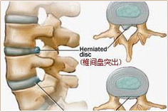

疼痛诊疗中心
- 沪上唯一 上海唯一疼痛特诊中心
- 大专科 多学科专家 全套诊疗手段
- 中医特色 从根源治疗疼痛 标本兼治
 记者有幸采访到了针灸科主任医师马维新，他正在观察患者的病情进展情况，得知院方通知了记者的请求，他非常歉意的告诉记者，需要等他把几个病人看完。这一等就是2个钟头。记者旁观者马主任陆续为8位...[详细]
记者有幸采访到了针灸科主任医师马维新，他正在观察患者的病情进展情况，得知院方通知了记者的请求，他非常歉意的告诉记者，需要等他把几个病人看完。这一等就是2个钟头。记者旁观者马主任陆续为8位...[详细]- "云南省首届‘飞翔杯’ 中老年舞蹈大赛"盛大开幕
- 为供弟妹上学，花季少女过度劳累致疼痛病
- 云南疼痛病医院将抗讲座：摆脱激素，控制类风湿
- 云南疼痛病医院远程会诊中心正式启动
- 第七届全国疼痛科主任峰会顺利召开
昆明医科大附三院与云南疼痛病医院启动

诊疗范围
Diagnoses range
特色诊疗
Specialty Clinics

- 病因引起颈椎病的原因是什么？
- 症状体征颈椎病有什么症状？
- 鉴别诊断颈椎病怎么检查诊断？
- 治疗方法如何治疗颈椎病？
- 预防保健如何预防颈椎病？
治疗技术
颈椎病颈椎病颈椎病颈椎病颈椎病颈椎病
马来西亚警方对MH370失恋定为刑事调查马来西亚警方对MH370失恋定为刑事调查马来西亚警方对MH370失恋定为刑事调查马来西亚警方对MH370失恋定为刑事调查马来西亚警方对MH370失恋定为刑事调查马来西亚警方对MH370失恋定为刑事调查马来西亚警方对MH370失恋定为刑事调查马来西亚警方...查看详情>>
- 病因引起腰椎盘突出的原因是什么？
- 症状体征腰椎盘突出有什么症状？
- 鉴别诊断腰椎盘突出怎么检查诊断？
- 治疗方法如何治疗腰椎盘突出？
- 预防保健如何预防腰椎盘突出？
治疗技术
防腰椎盘突出防腰椎盘突出防腰椎盘突出
马来西亚警方对MH370失恋定为刑事调查马来西亚警方对MH370失恋定为刑事调查马来西亚警方对MH370失恋定为刑事调查马来西亚警方对MH370失恋定为刑事调查马来西亚警方对MH370失恋定为刑事调查马来西亚警方对MH370失恋定为刑事调查马来西亚警方对MH370失恋定为刑事调查马来西亚警方...查看详情>>
- 病因引起强直性脊柱炎的原因是什么？
- 症状体征强直性脊柱炎有什么症状？
- 鉴别诊断强直性脊柱炎怎么检查诊断？
- 治疗方法如何治疗强直性脊柱炎？
- 预防保健如何预防强直性脊柱炎？
治疗技术
强直性脊柱炎强直性脊柱炎强直性脊柱炎
马来西亚警方对MH370失恋定为刑事调查马来西亚警方对MH370失恋定为刑事调查马来西亚警方对MH370失恋定为刑事调查马来西亚警方对MH370失恋定为刑事调查马来西亚警方对MH370失恋定为刑事调查马来西亚警方对MH370失恋定为刑事调查马来西亚警方对MH370失恋定为刑事调查马来西亚警方...查看详情>>
- 病因引起风湿类风湿的原因是什么？
- 症状体征风湿类风湿有什么症状？
- 鉴别诊断风湿类风湿怎么检查诊断？
- 治疗方法如何治疗风湿类风湿？
- 预防保健如何预风湿类风湿？
治疗技术
风湿类风湿风湿类风湿风湿类风湿风湿类风湿
马来西亚警方对MH370失恋定为刑事调查马来西亚警方对MH370失恋定为刑事调查马来西亚警方对MH370失恋定为刑事调查马来西亚警方对MH370失恋定为刑事调查马来西亚警方对MH370失恋定为刑事调查马来西亚警方对MH370失恋定为刑事调查马来西亚警方对MH370失恋定为刑事调查马来西亚警方...查看详情>>
- 病因引起股骨头坏死的原因是什么？
- 症状体征股骨头坏死有什么症状？
- 鉴别诊断股骨头坏死怎么检查诊断？
- 治疗方法如何治疗股骨头坏死？
- 预防保健如何预防股骨头坏死？
治疗技术
股骨头坏死股骨头坏死股骨头坏死股骨头坏死
马来西亚警方对MH370失恋定为刑事调查马来西亚警方对MH370失恋定为刑事调查马来西亚警方对MH370失恋定为刑事调查马来西亚警方对MH370失恋定为刑事调查马来西亚警方对MH370失恋定为刑事调查马来西亚警方对MH370失恋定为刑事调查马来西亚警方对MH370失恋定为刑事调查马来西亚警方...查看详情>>
- 病因引起骨质增生原因是什么？
- 症状体征骨质增生有什么症状？
- 鉴别诊断骨质增生怎么检查诊断？
- 治疗方法如何治疗骨质增生？
- 预防保健如何预防骨质增生？
治疗技术
骨质增生骨质增生骨质增生骨质增生骨质增生
马来西亚警方对MH370失恋定为刑事调查马来西亚警方对MH370失恋定为刑事调查马来西亚警方对MH370失恋定为刑事调查马来西亚警方对MH370失恋定为刑事调查马来西亚警方对MH370失恋定为刑事调查马来西亚警方对MH370失恋定为刑事调查马来西亚警方对MH370失恋定为刑事调查马来西亚警方...查看详情>>
- 病因引起肩周炎的原因是什么？
- 症状体征肩周炎有什么症状？
- 鉴别诊断肩周炎怎么检查诊断？
- 治疗方法如何治肩周炎？
- 预防保健如何预防肩周炎？
治疗技术
肩周炎肩周炎肩周炎肩周炎肩周炎肩周炎
马来西亚警方对MH370失恋定为刑事调查马来西亚警方对MH370失恋定为刑事调查马来西亚警方对MH370失恋定为刑事调查马来西亚警方对MH370失恋定为刑事调查马来西亚警方对MH370失恋定为刑事调查马来西亚警方对MH370失恋定为刑事调查马来西亚警方对MH370失恋定为刑事调查马来西亚警方...查看详情>>
- 病因引起带状孢疹的原因是什么？
- 症状体征带状孢疹有什么症状？
- 鉴别诊断带状孢疹怎么检查诊断？
- 治疗方法如何治疗带状孢疹？
- 预防保健如何预防带状孢疹？
治疗技术
带状孢疹带状孢疹带状孢疹带状孢疹带状孢疹
马来西亚警方对MH370失恋定为刑事调查马来西亚警方对MH370失恋定为刑事调查马来西亚警方对MH370失恋定为刑事调查马来西亚警方对MH370失恋定为刑事调查马来西亚警方对MH370失恋定为刑事调查马来西亚警方对MH370失恋定为刑事调查马来西亚警方对MH370失恋定为刑事调查马来西亚警方...查看详情>>
- 病因引起三叉神经痛原因是什么？
- 症状体征三叉神经痛有什么症状？
- 鉴别诊断三叉神经痛怎么检查诊断？
- 治疗方法如何治疗三叉神经痛？
- 预防保健如何预防三叉神经痛？
治疗技术
三叉神经痛三叉神经痛三叉神经痛三叉神经痛
马来西亚警方对MH370失恋定为刑事调查马来西亚警方对MH370失恋定为刑事调查马来西亚警方对MH370失恋定为刑事调查马来西亚警方对MH370失恋定为刑事调查马来西亚警方对MH370失恋定为刑事调查马来西亚警方对MH370失恋定为刑事调查马来西亚警方对MH370失恋定为刑事调查马来西亚警方...查看详情>>